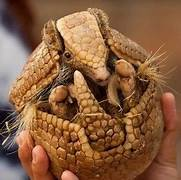
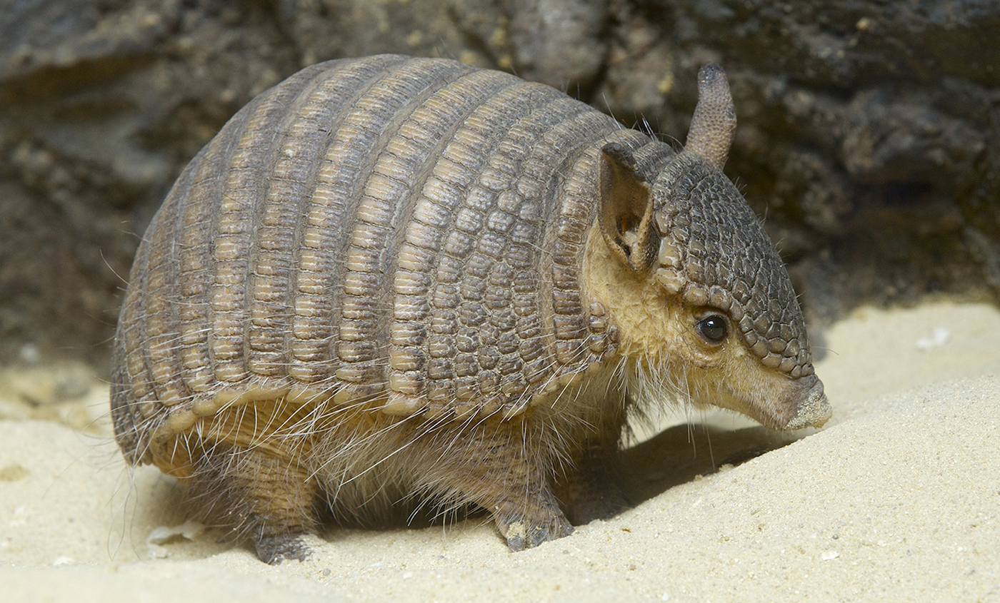

|

|
On average they are around 75 cm (30 inches) in length, with the largest species, the giant armadillo measuring up to 150cm, and the smallest, the pink fairy armadillo measuring around 13cm.
Their diets between species vary a little, but generally they eat insects, grubs, ants and termites.
|

|
Most species of armadillo are healthy in populations and classified as least concern according to the World Conservation Union (IUCN). However, the giant armadillo and the Brazilian three-banded armadillo are vulnerable with with a risk of extinction due to habitat loss and over farming. The pink fairy armadillo is data deficient, but is also thought to be at risk.
Interesting Armadillo Facts
1. Their shells are made of bone
Armadillo shells are composed of bony plates covered in scales. The part that covers their bodies is called a carapace and is made up of segmented bands.
|

|
Several of these bands are flexible, which allows the animal to curl up into a ball-like form when it feels threatened.
Depending on the species, armadillos can have a different number of bands. The nine-banded armadillo is the only species that can be found in the United States. 12. Most cannot curl up into balls
Not all armadillos are capable of wrapping themselves up in their armor. As a matter of fact, only one species—the three-banded armadillo—can curl up into a complete ball.3. They have exceptionally sticky tongues
To help them reach deep into holes and latch onto prey, armadillos have sticky tongues that resemble that of anteaters.
|

|
Although armadillos are omnivores, the majority of their diet is made up of insects such as ants, termites, and beetles.
4. They have very poor eyesight
Armadillos have extremely poor eyesight. To make up for this, they use their strong sense of smell to navigate their surroundings and hunt. 2
5. Most are solitary animals
Groups of armadillos may form when the weather is particularly chilly, but armadillos are, for the majority, solitary animals.
Groups of five to seven have been found huddling together in underground burrows in lower temperatures.
|